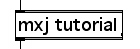

|  |
| Tutorial02 | HelloWorld 2 - Messages and methods |
After a Max object has been created it can send and receive messages. Max objects communicate with one another by sending messages made up of integers, floating-point numbers, and symbols. The mxj API defines the Atom class, a single unit that can represent any of these three data types. The API also provides convenience methods to convert from Atom to and from any of the eight primitve types (byte, short, int, long, float, double, boolean and char).
In order to send and receive messages your object must have inlets and outlets. In a later tutorial we will learn how to specify the number of inlets and outlets, but for now we'll keep the same constructor and use the MaxObject class's default one inlet and two outlets.
Let's add some methods to the HelloWorld1 class to enable further interaction with the Max universe. We're going to rename the class HelloWorld2 - note that the name of the constructor and the .java text file must match the new name of the class.
import com.cycling74.max.*;
public class HelloWorld2 extends MaxObject {
public HelloWorld2() {
post("hello world!");
}
public void errpost() {
error("hello error!");
}
public void hello() {
outlet(0, "world!");
}
public void cycling() {
outlet(0, 74);
}
}
When the mxj object instantiates an instance of a Java class it builds a table of supported messages by using the names of the public methods that the Java class defines. When you create a new Max object box and type mxj HelloWorld2 inside, the mxj object analyzes the Java class and prepares itself to respond to input messages of "hello", "cycling", and "errpost". The constructor is exempt from this process, so in this case the object will not respond to a "HelloWorld2" message. In later tutorials we will encounter some other method names with special functions that are exempt. To make a method that mxj will not map to an incoming message, you can simply declare it as private instead of public.
Upon receiving an "errpost" message in Max the mxj object will call the errpost method, which in turn calls MaxObject's error method. error is like post except that the console output is preceeded by the standard Max error prefix.
The hello and cycling methods illustrate uses of MaxObject's outlet method. The first argument to outlet is an integer index that specifies which outlet to use. Outlets are numbered from the left to the right, starting with an index of zero, so in both of these cases the data will be sent out the leftmost outlet.
The second argument of the outlet method can take a number of different forms. In the hello method we pass a String as the second parameter, upon receiving a message of "hello" in the Max universe our object will output the symbol world!. In the cycling method the second argument is an integer, and so upon receipt of "cycling" the object will send out the integer 74.
Let's quickly define some useful programming terminology. The signature of a method is its name and the types and arrangement of its arguments; for instance, the signature of the outlet method we used above for the hello method is outlet(int, String), but the signature of the outlet method used in the cycling method is outlet(int, int). Unlike C, which requires that no two methods have the same name, Java is able to distinguish between identically-named methods with different signatures (ie, their arguments differ in number, or type). This technique is called overloading, and when carefully used it can make code easier to write and read. The outlet method is an example of an overloaded method; below is a list of all its signatures that can legitimately be called.
outlet(int, Atom)
outlet(int, Atom[])
outlet(int, boolean)
outlet(int, boolean[])
outlet(int, byte)
outlet(int, byte[])
outlet(int, char)
outlet(int, char[])
outlet(int, double)
outlet(int, double[])
outlet(int, float)
outlet(int, float[])
outlet(int, int)
outlet(int, int[])
outlet(int, long)
outlet(int, long[])
outlet(int, short)
outlet(int, short[])
outlet(int, java.lang.String)
outlet(int, java.lang.String, Atom[])
All of these outlet methods have the same basic function, but they differ in how they handle the data you want to output. Please note that outlet should never be called from within a constructor, since the object isn't fully formed and ready to send out data until after the constructor method has finished executing.
If you feel like experimenting, you can try changing the method names or changing what they send out the outlet, recompiling and seeing how your new class behaves in Max.
| Example: |